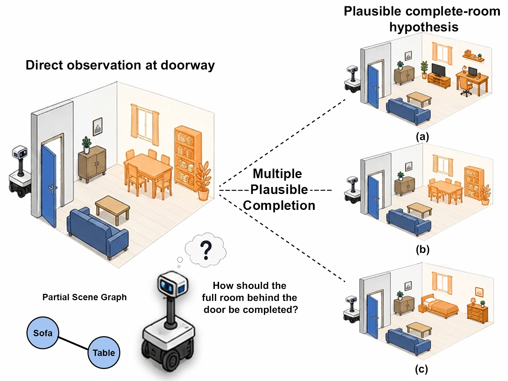
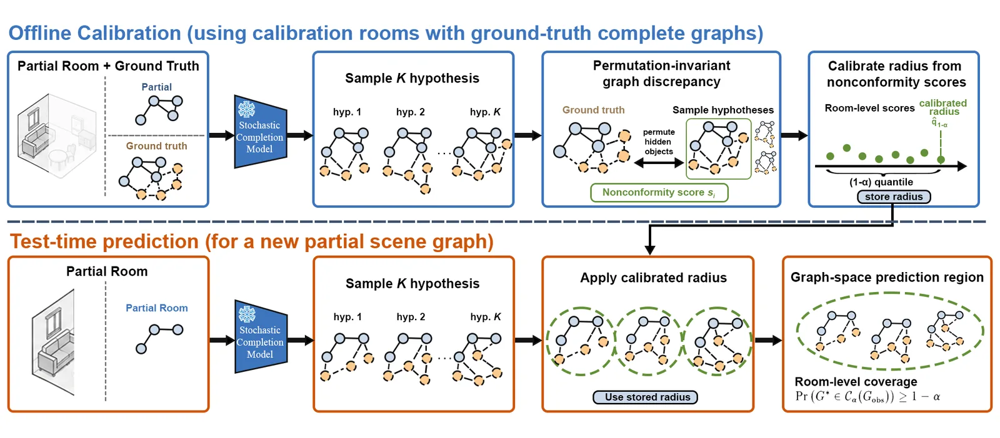

Under review
Calibrated Uncertainty for 3D Scene Graph Completion
Calibrated prediction regions over whole scene-graph hypotheses, reaching 89.95% coverage at a 90% target across 1,015 rooms from HM3D, 3RScan and MP3D.
- Status
- Under review
- Role
- First author
- When
- 2026
- Where
- Robotics & AI Lab, Kwangwoon University
Abstract
Completing a partially observed 3D scene graph is inherently multimodal, as the same observation can admit several structurally different yet plausible hidden scenes. Existing set-valued approaches typically calibrate object and relation predictions independently, which provides component-level guarantees but does not preserve coherent complete-graph hypotheses.
We propose permutation-invariant graph-space conformal prediction, a post-hoc framework that retains sampled completions as graph hypotheses and calibrates the distance from the ground-truth graph to its nearest sample. A permutation-invariant discrepancy aligns hidden objects before comparing their semantic classes and relations, and split conformal calibration constructs a prediction region as a union of graph-space neighborhoods around the sampled completions. Under exchangeability, the resulting region has finite-sample room-level marginal coverage over hidden-object semantics and relations.
Across 1,015 rooms from HM3D, 3RScan, and MP3D, empirical coverage tracks targets from 80% to 95%, reaching 89.95% coverage at a 90% target. Increasing the completion budget from 1 to 30 reduces the calibrated radius while preserving near-target coverage, and a shared threshold remains stable across the three datasets.

